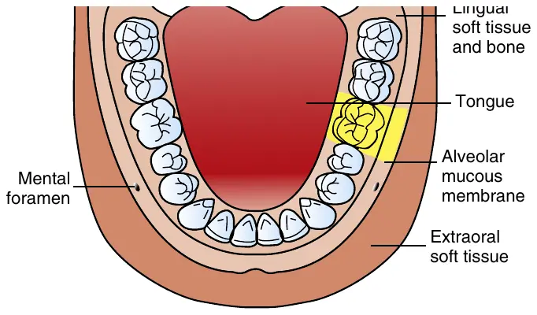
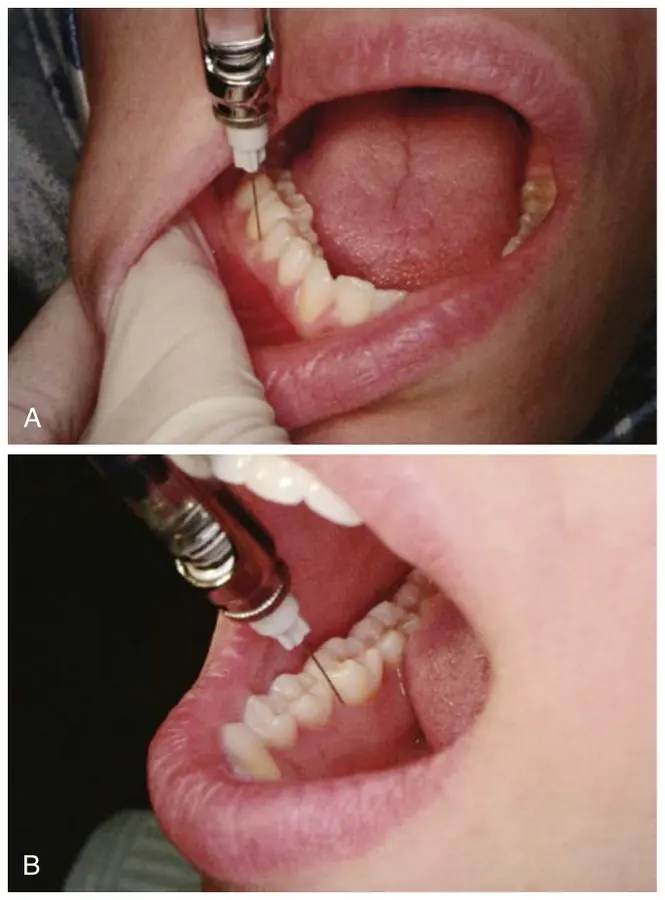

نسخه استخراجشده؛ ترجمه یا تأیید علمی انجام نشده است. وضعیت: captured
بیمار ۳۵ ساله برای دو ترمیم کوچک آمده است: یکی روی مولر اول پایین راست و دیگری روی پرمولر دوم پایین چپ. عصر جلسهی کاری دارد و نمیخواهد لب و زبانش ساعتها بیحس بماند. IANB دوطرفه تنها راه است؟

در بزرگسال، کورتکس ضخیم فک پایین نمیگذارد اینفیلتراسیون ساده به پالپ مولر برسد. تزریق PDL (اینترالیگامنتری) راه دیگری است: سوزن از سالکوس، بین ریشه و استخوان کرستال، جا میافتد و محلول زیر فشار تزریق میشود.
دارو به زور در طول لیگامان تا اپکس رانده نمیشود؛ از فضاهای مغز استخوان بیندندانی پخش میشود و به اپکس میرسد. پس PDL در واقع نوعی تزریق اینترااوسئوس است. نتیجه: بیحسی پالپ و بافت همان دندان، بی بیحسی لب و زبان.
منعها: عفونت یا التهاب شدید در محل تزریق، و بیماری که فقط با حس بیحسی لب آرام میگیرد. بیشتر بیماران PDL را ترجیح میدهند (۷۴٪ در یک بررسی بالینی).
نشانههای موفقیت: مقاومت زیاد هنگام تزریق، و سفید شدن (ایسکمی) بافت کنار سوزن. اگر محلول به دهان برگشت و بیمار مزهی تلخ حس کرد، دارو در بافت نمانده است؛ از همان نقطه با زاویهی دیگر دوباره تزریق کن. کار معمولاً ۳۰ ثانیه بعد شروع میشود. مدت بیحسی پالپ متغیر است (۵ تا ۵۵ دقیقه) و تزریق را میتوان تکرار کرد.

اشتباه رایج: تزریق تند و حجم زیاد. این دو علت اصلی درد و حساسیت به گاز گرفتن تا ۲ یا ۳ روز پس از تزریقاند، چون دندان کمی اکسترود میشود. درمان: دهانشویهی آبنمک گرم و مسکن ملایم. برای کم کردن خطر شکستن کارپول زیر فشار، پیش از تزریق محلول را تا حدود ۰٫۶ میلیلیتر خالی کن.